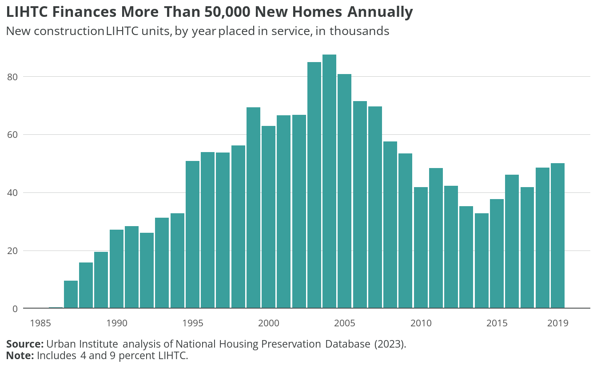

lihtc <- read_csv("data/lihtc.csv")Rows: 34 Columns: 2
── Column specification ────────────────────────────────────────────────────────
Delimiter: ","
dbl (2): year, units
ℹ Use `spec()` to retrieve the full column specification for this data.
ℹ Specify the column types or set `show_col_types = FALSE` to quiet this message.fig_lihtc <- ggplot(lihtc, aes(year, units)) +
geom_col(fill = "#3a9f9c") +
scale_x_continuous(breaks = c(1985, 1990, 1995, 2000, 2005, 2010, 2015, 2019)) +
scale_y_continuous(expand = c(0.02, 0.01)) +
labs(
title = "LIHTC Finances More Than 50,000 New Homes Annually",
subtitle = "New construction LIHTC units, by year placed in service, in thousands",
caption = "**Source:** Urban Institute analysis of National Housing Preservation Database (2023).<br>**Note:** Includes 4 and 9 percent LIHTC."
) +
add_zero_line("y")
fig_lihtc